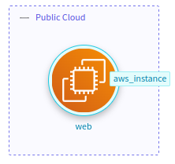

Terraform Quickstart
What is Terraform?
From the official Terraform page:
Terraform is an open-source infrastructure as code software tool that enables you to safely and predictably create, change, and improve infrastructure.
From the StartLeft's perspective, a Terraform (TF) defines a format to write files that define sets of components with relationships among them which can be interpreted to create a threat model.
The slp_tf module
The slp_tf module is the StartLeft Processor responsible for converting TF files into OTM. Its operation is based
on a mapping file that enables the users to define the translations between the source TF types and the expected
output in the OTM file.
Once you got familiarized with the basics explained in this page, you will need to know more about how to use and customize the behavior of the processor in order to configure your own conversions. For that, you should take a look to the Terraform mapping page, where you will find all the information you need, from basic to advanced, to build your own CFT mapping files.
Apart from this, you may also find interesting the generic usage manuals for the CLI and REST API.
A basic example
Let's suppose you have a TF file with a single EC2 instance like this:
data "aws_ami" "ubuntu" {
most_recent = true
filter {
name = "name"
values = ["ubuntu/images/hvm-ssd/ubuntu-focal-20.04-amd64-server-*"]
}
filter {
name = "virtualization-type"
values = ["hvm"]
}
owners = ["099720109477"] # Canonical
}
resource "aws_instance" "web" {
ami = data.aws_ami.ubuntu.id
instance_type = "t3.micro"
tags = {
Name = "HelloWorld"
}
}
And you want to translate it to OTM in order to import it into IriusRisk,
whose equivalent type for an EC2 instance is an ec2 component and the expected resultant project should be like this:

In that case, you will need a mapping file that contains, at least, a TrustZone and the mapping for the EC2 component. Notice that the standard requires that all the components must have a parent, in this case, the Public Cloud TrustZone is mapped as the default component's TrustZone. This mapping file could be as simple as this:
trustzones:
- id: public-cloud-01
name: Public Cloud
type: b61d6911-338d-46a8-9f39-8dcd24abfe91
$default: true
components:
- type: ec2
$source: {$type: "aws_instance"}
dataflows: []
The combination of this TF and mapping file will result in the OTM file below, that contains the mapped TrustZone and component along with all the necessary metadata defined by the standard and that is ready to be imported in a threat modeling tool like IriusRisk.
{
"otmVersion": "0.1.0",
"project": {
"name": "My EC2 project",
"id": "my-ec2-project"
},
"representations": [
{
"name": "Terraform",
"id": "Terraform",
"type": "code"
}
],
"trustZones": [
{
"id": "public-cloud-01",
"name": "Public Cloud",
"type": "b61d6911-338d-46a8-9f39-8dcd24abfe91",
"risk": {
"trustRating": 10
}
}
],
"components": [
{
"id": "public-cloud-01.aws_instance-web",
"name": "web",
"type": "ec2",
"parent": {
"trustZone": "public-cloud-01"
},
"tags": [
"aws_instance"
]
}
],
"dataflows": []
}
CLI
Note: Before continue, make sure you have StartLeft properly installed in your machine.
Save the files above in your file system with these names:
ec2-tf.jsonfor the Terraform file.ec2-mapping.yamlfor the mapping file.
Now we are going to execute StartLeft for these files so that an ec2.otm file will be generated in our working
directory with identical contents to the one above.
startleft parse \
--iac-type TERRAFORM \
--mapping-file ec2-mapping.yaml \
--output-file ec2.otm \
--project-id "my-ec2-project" \
--project-name "My EC2 project" \
ec2-tf.json
cURL
You can get the same result if through the StartLeft's REST API. For that, in first place we need to set up the server with the command:
Then, execute the following command to retrieve the OTM file with your EC2 component:
curl --location --request POST localhost:5000/api/v1/startleft/iac \
--header "Content-Type: multipart/form-data" \
--header "Accept: application/json" \
--form iac_type="TERRAFORM" \
--form iac_file=@"./ec2-tf.json" \
--form mapping_file=@"./ec2-mapping.yaml" \
--form id="my-ec2-project" \
--form name="My EC2 project"
More examples
The infrastructure built with Terraform may be as complex as you want. This is the reason because StartLeft, through the mapping files, is intended to be configurable, so you can extend or modify its behavior and/or create your own mappings on demand.
To help you to walk through more complex situations with larger Terraform and mapping files, we have created a page with explained TF examples which may be useful for you as a base for build your own mapping files.